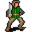

Defy¶Where to find Defy: Sullengard, Sullengard tavern basement, Aidem base 2, Aidem camp, Fallhaven, Guildbrig 2, Blackwater Mountain, Wild 6 house
{ .sprite }
| Type | NPC/Enemy (talks, but can also be fought) |
| Found in | Sullengard, Aidem base 2, Aidem camp, Fallhaven, Blackwater Mountain |
| Class | Humanoid |
| HP | 359 |
| XP when defeated | 851 |
| Introduced | v0.8.2 |
Sullengard, Sullengard tavern basement¶
Where: Sullengard: Sullengard tavern basement
Quests¶
- Another ruthless Crackshot: stage 20
Dialogue simulator¶
Set your quest stages and items, then talk to Defy. Same rules as the game: same checks, same options, same effects.
Rules verified against v0.8.18 game code (ConversationController.java) and dialogue data.
Dialogue (6 lines)
Exactly as in the game files. Each line appears once; links jump to where a choice leads.
guild04_defy (silent check: the first matching branch below is taken)
- branch 1 (if latest stage of Another ruthless Crackshot is 10) → guild04_defy_1
- branch 2 → guild04_defy_5
guild04_defy_1 Defy: “Andor, is that you? You grew weak and small. How was your visit to Nor City?”
- “I'm $playername. Andor is my brother and I'm not weak.” → guild04_defy_2
guild04_defy_5 Defy: “Just mind your own business, kid. Now, get out of here or I'll kick you out.”
- “You will be the one who's kicked out of here.” → conversation ends
- “You will be the one to blame here.” (if latest stage of Another ruthless Crackshot is 20) → conversation ends
guild04_defy_2 Defy: “Oh, yeah, but you do look a lot like him. I'm Defy.”
- “So you know my brother as well?” → guild04_defy_3
guild04_defy_3 Defy: “Indeed. He always asks questions like a curious kid does. Tell me, what brings you here, $playername?”
- “Umar told me that it is time to give their share to the bootleg brewers.” → guild04_defy_4
- “Umar sent me for our business.” → guild04_defy_4
guild04_defy_4 Defy: “The time of sharing? If that's so, then tell him that there will be a delay.” — effects: sets stage 20 of Another ruthless Crackshot
- “Really?” → guild04_defy_5
- “A delay of what?” → guild04_defy_5
Version history¶
| Version | Change |
|---|---|
| v0.8.2 | Added Dialogue: 6 lines added |
| v0.8.8 | Attack chance: removed (was 120) Attack cost: removed (was 5) Attack damage: removed (was 7–11) Block chance: removed (was 120) Critical multiplier: removed (was 3) Critical skill: removed (was 25) Damage resistance: removed (was 5) Loot table removed On hit, condition on self: removed Combo (magnitude 1, 1 rounds, 30% chance) When hit, condition on self: removed Concentration (magnitude 1, 2 rounds, 40% chance) (+3 more) |
Verified against v0.8.18 and every earlier release back to v0.7.0 (game data compared release by release).
Aidem base 2¶
Where: Aidem base 2
You can fight Defy
Answering “I hope not.” starts a fight with Defy.
Combat¶
| Class | Humanoid |
| HP | 359 |
| XP when defeated | 851 |
| Damage | 10 to 18 |
| AC | 170 |
| BC | 170 |
| DR | 0 |
| Attacks per turn | 3 (3 AP each, 10 AP) |
| Crit chance | 5% (×3.0) |
When you hit it: On self: Concentration (magnitude 1, 2 rounds, 40% chance)
Verified against v0.8.18 monster data.
Drops¶
| Item | Chance | Qty |
|---|---|---|
| Villain's ring | 100% | 1 |
| Gold coins | 100% | 3500 to 5000 |
| Defy's ring | 100% | 1 |
Quests that count defeats¶
- Wanted men with stepping on a trigger on Aidem base 2 checks that this enemy has been defeated.
Quests¶
- Wanted men: stages 56, 60, 75
Dialogue simulator¶
Set your quest stages and items, then talk to Defy. Same rules as the game: same checks, same options, same effects.
Rules verified against v0.8.18 game code (ConversationController.java) and dialogue data.
Dialogue (8 lines)
Exactly as in the game files. Each line appears once; links jump to where a choice leads.
aidem_base_defy_selector (silent check: the first matching branch below is taken)
- “Come and get it!” (if latest stage of Wanted men is 75) → aidem_base_fight
- Next (if reached stage 45 of Wanted men; NOT reached stage 60 of Wanted men) → aidem_base_defy_help_10
- Next (if NOT reached stage 56 of Wanted men) → aidem_base_dont_help_defy_10
- “What are you waiting for? Go take the fake key to Troublemaker.” (if reached stage 60 of Wanted men) → conversation ends
aidem_base_fight Defy: “You will regret this, kid!” — effects: removes monsters from aidem_base_2, spawns monsters on aidem_base_2, spawns monsters on aidem_base_2, spawns monsters on aidem_base_2, spawns monsters on aidem_base_2
- “I hope not.” → fight starts
aidem_base_defy_help_10 Defy: “Do you have the key? Hand it over.”
- “Oops. I forgot to bring it with me. I'll be back soon.” (if NOT carry 1× Thieves' vault key) → conversation ends
- “Yes. Here it is.” (if hand over 1× Thieves' vault key) → aidem_base_defy_help_20
- “Yes, but you are not having it. I will loot the vault myself and keep everything I find.” (if carry 1× Thieves' vault key) → aidem_base_defy_dont_help_10
aidem_base_dont_help_defy_10 Defy: “Do you have the key? Hand it over.”
- “Yes, Here it is. [Handing over the fake key]” (if hand over 1× Fake Thieve's Guild vault key) → aidem_base_defy_help_tg_10
aidem_base_defy_help_20 Defy: “Thank you so much. Now take this fake key that Zachlanny's has made and return it to Troublemaker before he suspects anything. Then meet us at the vault to collect your share of the loot.” — effects: gives Aidem fake vault key, sets stage 60 of Wanted men
aidem_base_defy_dont_help_10 Defy: “Come again?”
- “I said, "here it is".” → aidem_base_defy_help_20
- “You heard me the first time. I'm keeping the key and looting the vault myself.” → aidem_base_defy_dont_help_20
aidem_base_defy_help_tg_10 Defy: “Thank you so much. Now take this fake key that Zachlanny's has made and return it to Troublemaker before he suspects anything. Then meet us at the vault to collect your share of the loot.” — effects: gives Aidem fake vault key, sets stage 56 of Wanted men, removes monsters from aidem_base_2, spawns monsters on wild6_house, removes monsters from aidem_base_2
aidem_base_defy_dont_help_20 Defy: “I will be taking that key now!” — effects: sets stage 75 of Wanted men
- “Come and try!” → aidem_base_fight
Version history¶
| Version | Change |
|---|---|
| v0.8.8 | Added Dialogue: 8 lines added |
| v0.8.10 | Dialogue: 1 line changed |
| v0.8.12.1 | Dialogue: 1 line changed |
Verified against v0.8.18 and every earlier release back to v0.7.0 (game data compared release by release).
Aidem camp¶
Where: Aidem camp
Quests¶
- Wanted men: stages 20, 25, 30, 35, 40
Dialogue simulator¶
Set your quest stages and items, then talk to Defy. Same rules as the game: same checks, same options, same effects.
Rules verified against v0.8.18 game code (ConversationController.java) and dialogue data.
Dialogue (33 lines)
Exactly as in the game files. Each line appears once; links jump to where a choice leads.
aidem_camp_defy_10 Defy: “Oh, how interesting your timing is.”
- “Really? And why is that?” → aidem_camp_defy_20
aidem_camp_defy_20 Defy: “Well, you see, we are in kind of a predicament.”
- “Oh, you are feeling guility for what you did to the great people of Sullengard and want to turn yourselves in, but…” → aidem_camp_defy_30
aidem_camp_defy_30 Defy: “Now that's funny. No! Now back to what I was trying to tell you...”
- Next → aidem_camp_defy_35
aidem_camp_defy_35 Defy: “We are planning a heist, but we need your "skills" to pull it off.”
- “Forget it!” → aidem_camp_defy_40
- “My "skills" are not for hire.” → aidem_camp_defy_40
aidem_camp_defy_40 Defy: “Please. Just hear me out.”
- Next → aidem_camp_defy_45
aidem_camp_defy_45 Defy: “We have knowledge of this vast repository of gold and other treasures, but it is well secured under lock and key.”
- “OK. You had me at "treasures". Please go on.” → aidem_camp_defy_50
- “And you want me to help you return it to its rightful owners?” → aidem_camp_defy_46
aidem_camp_defy_50 Defy: “The problem of needing the key is where your "skills" come in.”
- “These "skills" that you keep mentioning, what are they?” → aidem_camp_defy_55
aidem_camp_defy_46 Defy: “[Laughing loudly]. Kid, you are certainly as funny as you are funny looking, I'll tell you that right now. Now, back on topic...”
- Next → aidem_camp_defy_50
aidem_camp_defy_55 Defy: “I was just getting to that. If you would stop interrupting me, I could get to the plan quicker and how you play a major role in it.”
- “A "major" role you said. So what, I get fifty percent of the loot?” → aidem_camp_defy_56
- “Oh, sorry. Please continue.” → aidem_camp_defy_60
aidem_camp_defy_56 Defy: “Again with the humor. No, you will not be getting fifty percent. Anyways...”
- Next → aidem_camp_defy_60
aidem_camp_defy_60 Defy: “Well, before I get into any more details. Hey Alaric [the lost traveler's real name], do we trust this kid enough to tell him the details?”
- Next → aidem_camp_defy_alaric_10
aidem_camp_defy_alaric_10 Lost Traveler: “Well Defy, $playername did let me go after discovering my crime.”
- “[Keep quiet about the facts and agree, for now] That's true.” → aidem_camp_defy_70
aidem_camp_defy_70 Defy: “That's fair enough. Now let us move on to the details, shall we?”
- “Yes, please. I'm getting bored here.” → aidem_camp_defy_75
aidem_camp_defy_75 Defy: “You see, we want to get back some of what is ours. What we helped to accumulate over the years. We want to hit them where it really hurts.”
- “Who's that?” → aidem_camp_defy_76a
- “Feygard? Nor City?” → aidem_camp_defy_76
- “The Thieves' Guild?” → aidem_camp_defy_77
aidem_camp_defy_76a Defy: “I'm talking about the Thieves' Guild.” — effects: sets stage 20 of Wanted men
- “Why would you want to do that?” → aidem_camp_defy_78
aidem_camp_defy_76 Defy: “Well, yes. But not right now. Those adventures are too big for us right now.”
- Next → aidem_camp_defy_76a
aidem_camp_defy_77 Defy: “Exactly!” — effects: sets stage 20 of Wanted men
- “Why is that?” → aidem_camp_defy_78
aidem_camp_defy_78 Defy: “Well, for starters, Umar and his sidekick brother have wronged us over and over again. Keeping all the wealth for themselves. And don't even get me started on the emotional stress and abuse we suffer from at their hands.”
- “Um...what did they do?” → aidem_camp_defy_80
aidem_camp_defy_80 Defy: “You know what I am talking about, don't you?”
- “I'm not so sure that I do.” → aidem_camp_defy_81
- “Actually, yeah, kind of. Well, at least that thought has crossed my mind once or twice recently.” → aidem_camp_defy_82
aidem_camp_defy_81 Defy: “Come on, $playername. Open you eyes. Think. Your are just a tool to him. Something for him to use to accomplish whatever his agenda is that day.”
- “Actually, yeah, kind of. Well, at least that thought has crossed my mind once or twice recently.” → aidem_camp_defy_82
- “I'm not so sure, but please, get on with your plan.” → aidem_camp_defy_82
aidem_camp_defy_82 Defy: “Anyways... The Guild has a vault. A repository of treasures and wealth hidden and secure in a location just south of Fallhaven.”
- “I've been all around the Fallhaven area a thousand times and I've never seen any vault.” → aidem_camp_defy_83
- “I don't believe you. I would have stumbled across it.” → aidem_camp_defy_83
aidem_camp_defy_83 Defy: “Oh, trust me, it's there all right.”
- “Trust you? You want me to trust you? A dishonorable thief? Where is it then?” → aidem_camp_defy_84
- “Tell me. I want to know.” → aidem_camp_defy_84
aidem_camp_defy_84 Defy: “Are you familiar with that vacant house southwest of Fallhaven? The one next to the cliffside?”
- “Of course I am.” → aidem_camp_defy_85
- “[Lie] Yes, yes I am.” → aidem_camp_defy_85
aidem_camp_defy_85 Defy: “The entrance to it is found inside that house. It's hidden and secured. You will need to find the passage that leads underground in order to gain access.” — effects: sets stage 25 of Wanted men
- “That sounds easy. I'll do it.” → aidem_camp_defy_86
- “I guess I can try and get in there.” → aidem_camp_defy_86
aidem_camp_defy_86 Defy: “You won't be doing it.”
- “I won't be?” → aidem_camp_defy_87
aidem_camp_defy_87 Defy: “No. We will be doing that.”
- “Then what do you need from me?” → aidem_camp_defy_88
aidem_camp_defy_88 Defy: “What I need from you is more of an inside job. I need you to get the key to the vault from Troublemaker without him suspecting any trickery. Do you think you can handle that?” — effects: sets stage 30 of Wanted men
- “Why should I help you? What do I get out of this?” → aidem_camp_defy_89
- “If I do this for you, then I expect to get paid!” → aidem_camp_defy_89a
aidem_camp_defy_89 Defy: “Oh, you aren't as dumb as you are funny.”
- Next → aidem_camp_defy_89a
aidem_camp_defy_89a Defy: “How does 10 percent of the total treasure sound?”
- “I want 50 percent” → aidem_camp_defy_89a
- “How does 30 percent sound?” → aidem_camp_defy_89a
- “Nope. I will go no lower than 25 percent” → aidem_camp_defy_89a
- “I'll do it for twice that amount. 20 percent.” → aidem_camp_defy_90
aidem_camp_defy_90 Defy: “Fine! [Shh] I'll take it out of Greedy's portion. He'll never know the difference.” — effects: sets stage 35 of Wanted men
- Next → aidem_camp_defy_95
aidem_camp_defy_95 Defy: “We will be leaving this campsite in favor of our hideout. Meet up with me there and you can give me the key then.”
- “Sounds good, but where is your hideout?” → aidem_camp_defy_100
aidem_camp_defy_100 Defy: “It's where the rail tracks end. West of the Sutdover River.” — effects: sets stage 40 of Wanted men, removes monsters from aidem_camp, spawns monsters on aidem_base_2, spawns monsters on aidem_base_2
- “The Sutdover River? Where is it?” → aidem_camp_defy_110
aidem_camp_defy_110 Defy: “The Sutdover River flows between Sullengard and Stoutford.”
Version history¶
| Version | Change |
|---|---|
| v0.8.8 | Added Dialogue: 33 lines added |
| v0.8.13 | Dialogue: 2 lines changed · text: “I'm talking about the Thieves Guild.” → “I'm talking about the Thieves' Guild.” |
| v0.8.15 | Dialogue: 1 line changed · text: “Come on, $playername. Open your eyes. Think. Your are just a tool to …” → “Come on, $playername. Open you eyes. Think. Your are just a tool to h…” |
Verified against v0.8.18 and every earlier release back to v0.7.0 (game data compared release by release).
Fallhaven, Guildbrig 2¶
Where: Fallhaven: Guildbrig 2
Version history¶
| Version | Change |
|---|---|
| v0.8.8 | Added |
Verified against v0.8.18 and every earlier release back to v0.7.0 (game data compared release by release).
Blackwater Mountain, Wild 6 house¶
Where: Blackwater Mountain: Wild 6 house
Quests¶
- Wanted men: stage 70
Dialogue simulator¶
Set your quest stages and items, then talk to Defy. Same rules as the game: same checks, same options, same effects.
Rules verified against v0.8.18 game code (ConversationController.java) and dialogue data.
Dialogue (3 lines)
Exactly as in the game files. Each line appears once; links jump to where a choice leads.
defy_wild6house_selector (silent check: the first matching branch below is taken)
- Next (if reached stage 65 of Wanted men) → defy_wild6house_10
- Next → defy_wild6house_20
defy_wild6house_10 Defy: “Here is your reward for your role in our success.” — effects: sets stage 70 of Wanted men, gives Gold coins
- “It was nice doing business with you.” → defy_wild6house_20
defy_wild6house_20 Defy: “We are leaving now. Too close to Fallhaven for my liking.” — effects: removes monsters from wild6_house
Version history¶
| Version | Change |
|---|---|
| v0.8.8 | Added Dialogue: 3 lines added |
Verified against v0.8.18 and every earlier release back to v0.7.0 (game data compared release by release).
Behind the scenes¶
How the game data handles this character. Not needed for playing.
5 entries. The game data defines 5 separate characters named Defy. The game makes a new entry whenever a character needs different behaviour (another conversation later in a quest, another place, other stats). Some are the same person at different points in the story; others just share a generic name. Here they differ in: conversation, location, combat statistics, loot or shop stock, movement.
| Entry | Type | Section |
|---|---|---|
g04_defy |
NPC | Sullengard, Sullengard tavern basement |
aidem_base_defy |
NPC/Enemy | Aidem base 2 |
aidem_camp_defy |
NPC | Aidem camp |
aidem_jail_defy |
Scenery | Fallhaven, Guildbrig 2 |
defy_wild6house |
NPC | Blackwater Mountain, Wild 6 house |
aidem_jail_defyhas no conversation and no combat statistics. It is a decoration, an animal or a figure in a scripted scene.
How the XP value is calculated
The game computes each enemy's experience value when it loads the data (MonsterTypeParser.java):
XP = ⌈(attacks per turn × attack chance × average damage × (1 + critical skill × critical multiplier) × 3 + HP × (1 + block chance) + 9 × damage resistance) × 0.7⌉
Percentages are used as fractions (e.g. 60% = 0.6). Enemies whose attacks inflict a condition are worth 50 XP more. The More Exp skill adds a percentage on top.
Technical information: g04_defy
| Entry ID | g04_defy |
| Type (wiki) | NPC |
| Spawn group | g04_defy |
| Loot table | – |
| Conversation | guild04_defy |
| Faction | – |
| Movement | – |
| Icon | monsters_ld1:81 |
| Defined in | res/raw/monsterlist_sullengard.json |
Raw data:
{
"id": "g04_defy",
"name": "Defy",
"iconID": "monsters_ld1:81",
"unique": 1,
"monsterClass": "humanoid",
"spawnGroup": "g04_defy",
"phraseID": "guild04_defy",
"hitEffect": {},
"hitReceivedEffect": {}
}
Technical information: aidem_base_defy
| Entry ID | aidem_base_defy |
| Type (wiki) | NPC/Enemy |
| Spawn group | help_defy |
| Loot table | aidem_base_defy_dl |
| Conversation | aidem_base_defy_selector |
| Faction | – |
| Movement | helpOthers |
| Icon | monsters_ld1:81 |
| Defined in | res/raw/monsterlist_mt_galmore.json |
Raw data:
{
"id": "aidem_base_defy",
"name": "Defy",
"iconID": "monsters_ld1:81",
"maxHP": 359,
"moveCost": 3,
"unique": 1,
"monsterClass": "humanoid",
"movementAggressionType": "helpOthers",
"attackDamage": {
"min": 10,
"max": 18
},
"spawnGroup": "help_defy",
"phraseID": "aidem_base_defy_selector",
"droplistID": "aidem_base_defy_dl",
"attackCost": 3,
"attackChance": 170,
"criticalSkill": 5,
"criticalMultiplier": 3.0,
"blockChance": 170,
"hitReceivedEffect": {
"conditionsSource": [
{
"condition": "g03_concentration",
"magnitude": 1,
"duration": 2,
"chance": "40"
}
]
}
}
Technical information: aidem_camp_defy
| Entry ID | aidem_camp_defy |
| Type (wiki) | NPC |
| Spawn group | aidem_camp_defy |
| Loot table | – |
| Conversation | aidem_camp_defy_10 |
| Faction | – |
| Movement | – |
| Icon | monsters_ld1:81 |
| Defined in | res/raw/monsterlist_mt_galmore.json |
Raw data:
{
"id": "aidem_camp_defy",
"name": "Defy",
"iconID": "monsters_ld1:81",
"phraseID": "aidem_camp_defy_10"
}
Technical information: aidem_jail_defy
| Entry ID | aidem_jail_defy |
| Type (wiki) | Scenery |
| Spawn group | aidem_jail_defy |
| Loot table | – |
| Conversation | – |
| Faction | – |
| Movement | – |
| Icon | monsters_ld1:81 |
| Defined in | res/raw/monsterlist_mt_galmore.json |
Raw data:
{
"id": "aidem_jail_defy",
"name": "Defy",
"iconID": "monsters_ld1:81",
"monsterClass": "humanoid"
}
Technical information: defy_wild6house
| Entry ID | defy_wild6house |
| Type (wiki) | NPC |
| Spawn group | defy_wild6house |
| Loot table | – |
| Conversation | defy_wild6house_selector |
| Faction | – |
| Movement | – |
| Icon | monsters_ld1:81 |
| Defined in | res/raw/monsterlist_mt_galmore.json |
Raw data:
{
"id": "defy_wild6house",
"name": "Defy",
"iconID": "monsters_ld1:81",
"phraseID": "defy_wild6house_selector"
}
Community notes¶
Written by players, not generated from game data. Observations: what players notice in-game · Lore: the in-world story · Trivia: real-world facts, references, development history · Theory / speculation: unconfirmed ideas; may just be unfinished content
Observations¶
No notes yet. Contributions are welcome: add a note.
Lore¶
No notes yet. Contributions are welcome: add a note.
Trivia¶
No notes yet. Contributions are welcome: add a note.
Theory / speculation¶
No notes yet. Contributions are welcome: add a note.
Data from v0.8.18